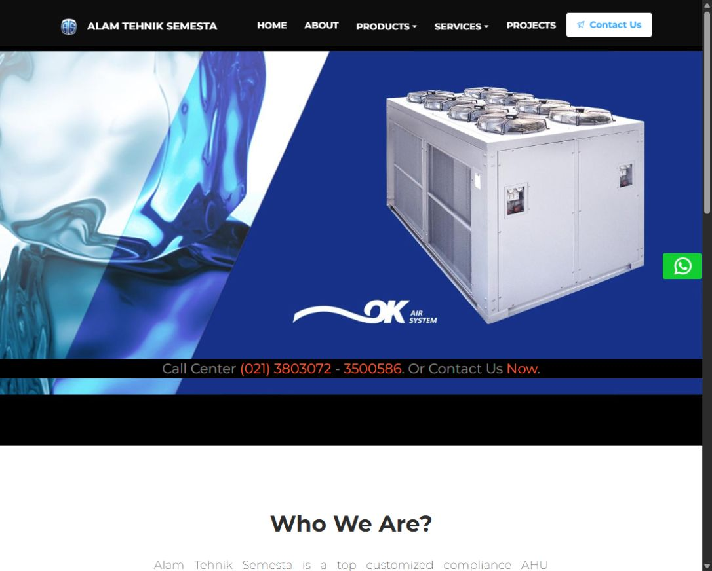

PROJECT DOSSIER / REACT / STATIC HOSTING
ATS Company Website.
A public catalogue for HVAC products, services, and company experience.
The context
A company-facing website for PT. Alam Tehnik Semesta, developed around its existing identity and product content. The personal portfolio and company site now have separate entry points.
What I built
Company information, product and service pages, project showcase, responsive navigation, and contact integration. The interface builds on Now UI Kit React; template and company credits are preserved.
Production build and API regression tests pass. The company presentation is hosted independently in the ats-company-website repository. Contact submission only becomes available with a configured backend and CAPTCHA; static hosting does not run the Go service.
A closer look
